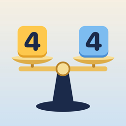

Iguala los dos lados
Balance Numbers · Iguale os dois lados
Ayuda
Coloca las fichas de la bandeja en las casillas vacías de la balanza hasta que los dos lados sumen lo mismo. Cada ficha pesa lo que dice su número; su lugar en el plato no importa. Las casillas ×2 y ×3 multiplican la ficha que pongas en ellas.
¿Cómo muevo una ficha?
Toca la ficha y luego una casilla vacía, o arrástrala. Para devolverla, tócala y luego toca la bandeja. También funciona con VoiceOver.
¿Cómo funciona el reto diario y la racha?
Cada día hay un puzzle nuevo, el mismo para todos. Si lo completas también al día siguiente, tu racha sube; si faltas un día, vuelve a empezar.
Compré el juego completo, ¿cómo lo recupero en otro iPhone?
Abre Ajustes › Compras › Restaurar compras con la misma cuenta de Apple.
Contacto
Escríbenos a alfreditogames2025@gmail.com.
Política de privacidad
Última actualización: 25 de octubre de 2026
Iguala los dos lados no recopila ningún dato personal.
- No hay cuentas propias ni inicio de sesión.
- No hay anuncios, análisis, rastreo ni SDK de terceros.
- No usa el micrófono, la cámara, la ubicación ni los contactos.
- El progreso se guarda solo en tu dispositivo. Si borras la app, se borra.
- Game Center (opcional) y las compras son servicios de Apple. Apple procesa tu sesión, tus logros, tus puntuaciones y tu pago según su propia política de privacidad. Nosotros no recibimos tu nombre, tu identificador de jugador ni tus datos de pago.
Si tienes preguntas, escríbenos a alfreditogames2025@gmail.com.
Balance Numbers — Help
Place the tiles from the tray into the empty slots until both sides of the scale add up to the same total. Each tile weighs its number; where it sits doesn't matter. ×2 and ×3 slots multiply their tile. Tap a tile and then a slot, or drag it. To restore the full game on another iPhone, open Settings › Purchases › Restore purchases.
Privacy policy
Last updated: October 25, 2026
Balance Numbers does not collect any personal data. No accounts, ads, analytics, tracking or third-party SDKs. Progress stays on your device. Game Center (optional) and purchases are Apple services processed under Apple's privacy policy; we never receive your name, player ID or payment details. Contact: alfreditogames2025@gmail.com.
Iguale os dois lados — Ajuda
Coloque as peças da bandeja nas casas vazias até os dois lados da balança somarem o mesmo. Cada peça pesa o número que mostra; a posição não importa. As casas ×2 e ×3 multiplicam a peça. Toque numa peça e depois numa casa, ou arraste. Para restaurar o jogo completo em outro iPhone, abra Ajustes › Compras › Restaurar compras.
Política de privacidade
Última atualização: 25 de outubro de 2026
Iguale os dois lados não coleta nenhum dado pessoal. Sem contas, anúncios, análises, rastreamento ou SDKs de terceiros. O progresso fica no seu aparelho. O Game Center (opcional) e as compras são serviços da Apple, tratados pela política de privacidade da Apple; nunca recebemos seu nome, ID de jogador ou dados de pagamento. Contato: alfreditogames2025@gmail.com.